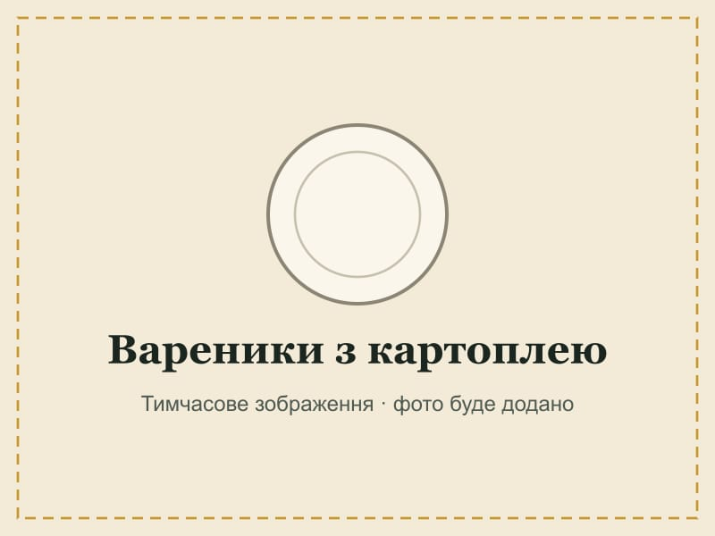
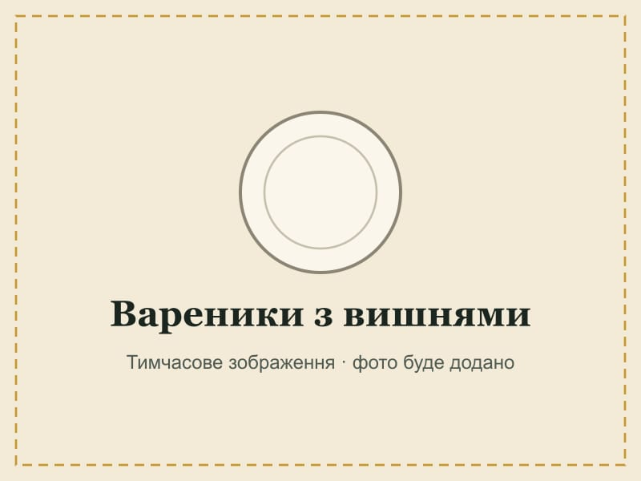
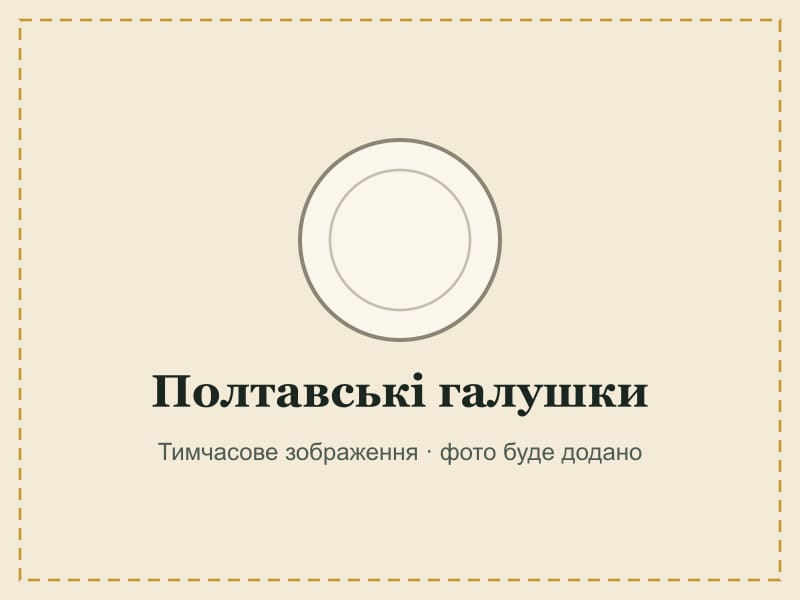
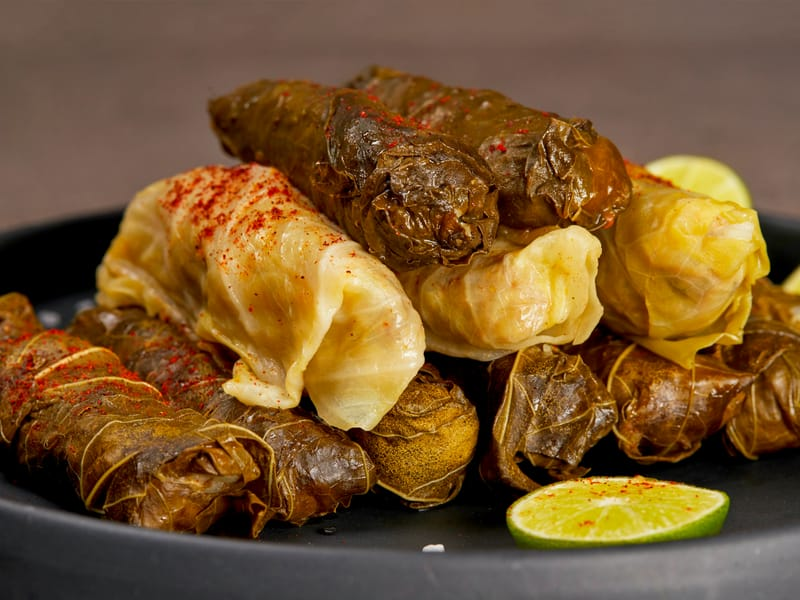
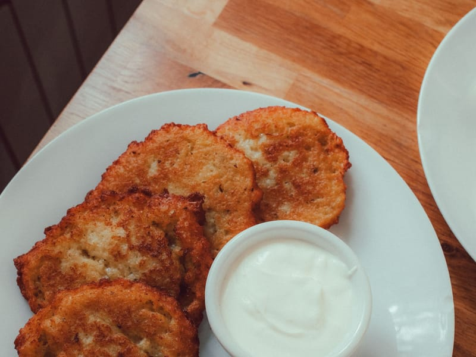
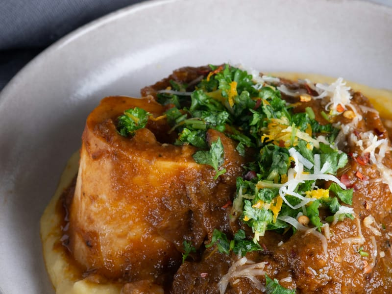
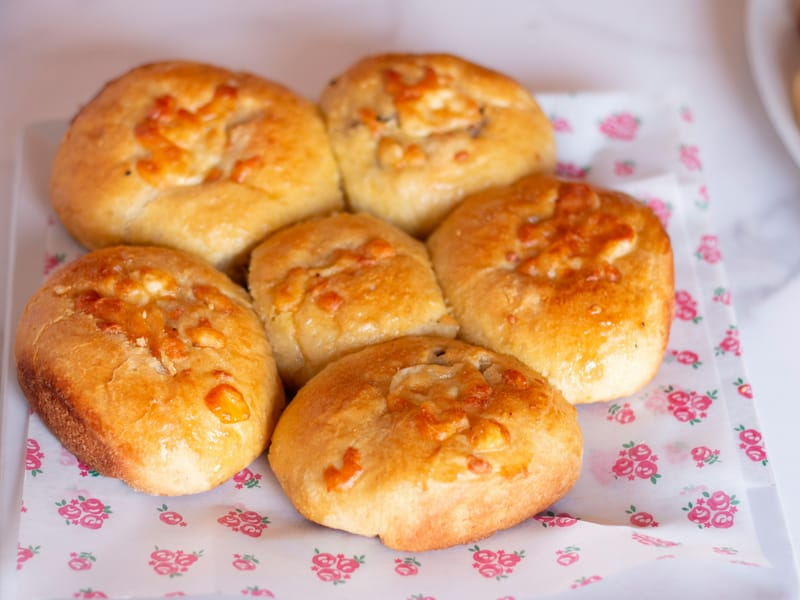
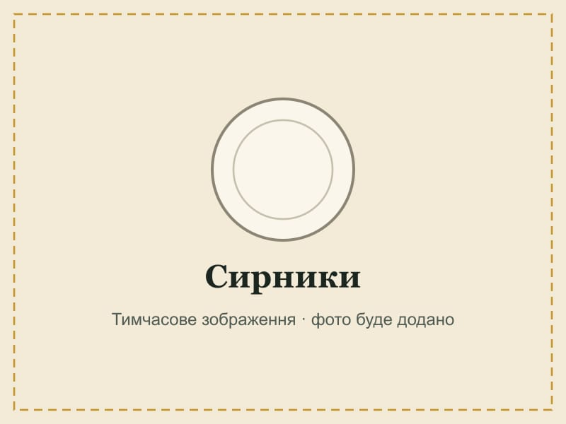
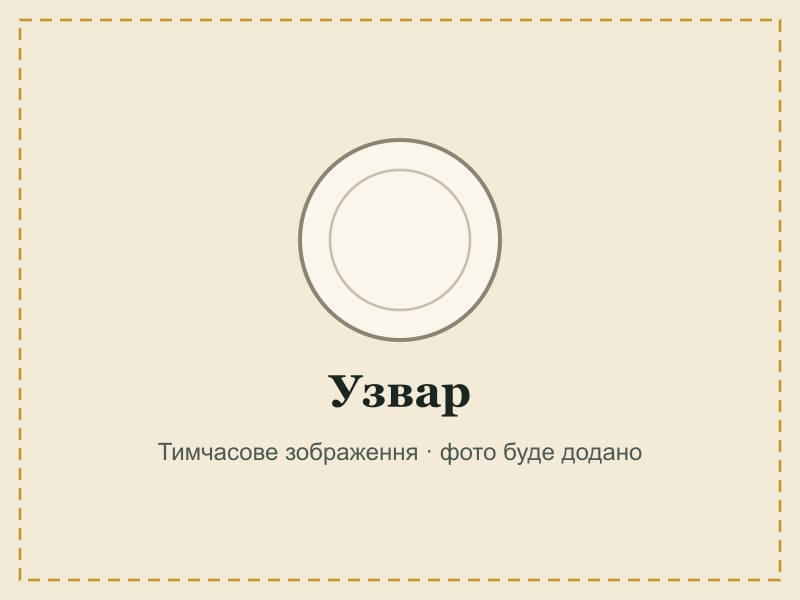

Український борщ

Наваристий червоний борщ на реберцях із буряком, капустою та квасолею. Подають зі сметаною і пампушками.
- Категорія
- Перші страви
- Регіон
 Полтавщина
Полтавщина- Час
- Складність
- Середня
- Порції
- 4
Наваристий червоний борщ на реберцях із буряком, капустою та квасолею. Подають зі сметаною і пампушками.

Тонке тісто на воді, начинка з картопляного пюре і золотиста цибуля зверху.

Літні вареники з соковитими вишнями — з медом або сметаною.

Пухкі галушки з дріжджового тіста зі шкварками і смаженою цибулею.

Капустяні листки з начинкою з рису та м'яса, тушковані в томатному соусі.

Хрусткі картопляні оладки з цибулею, засмажені до золотої скоринки.

Гуцульська кукурудзяна каша на сметані з бринзою і шкварками.

М'які дріжджові булочки з часниковою заправкою — найкраща пара до борщу.

Ніжні оладки з домашнього сиру з ваніллю — зі сметаною чи варенням.

Напій із сушених яблук, груш і слив із медом — окраса різдвяного столу.